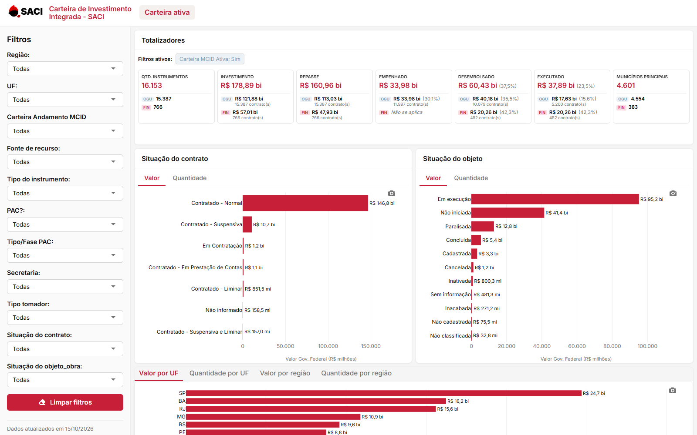
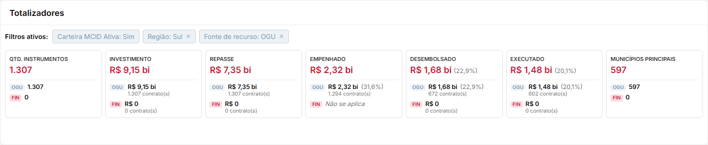
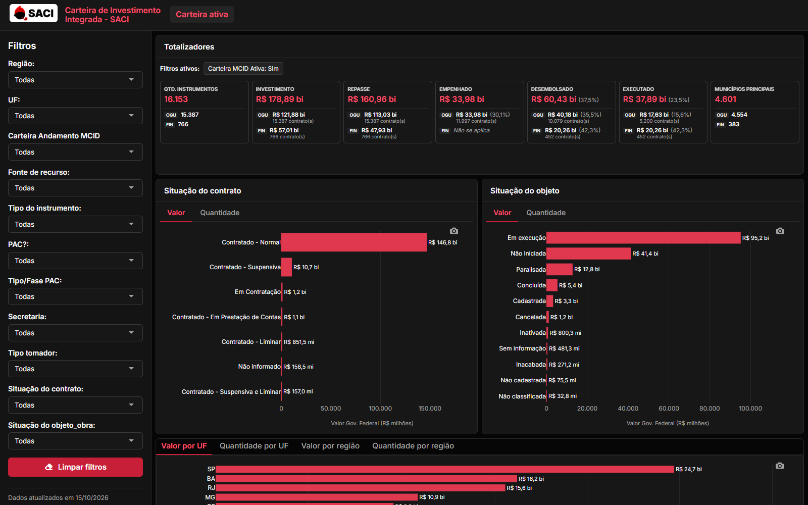
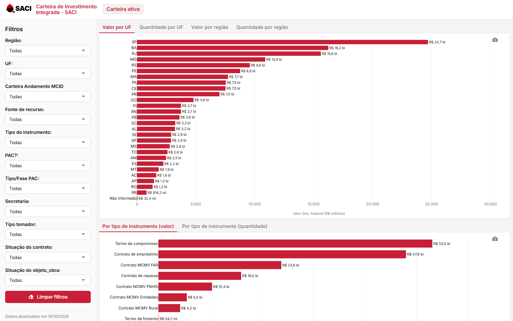
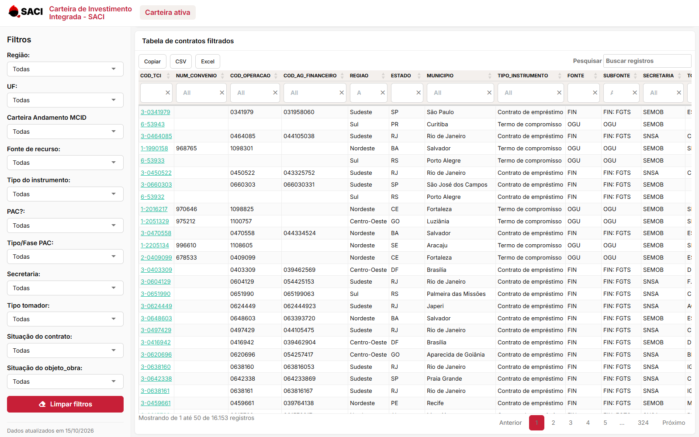

Carteira de Investimento Integrada - SACI
Painel da carteira de investimentos do Ministério das Cidades, no padrão visual do SACI. Totalizadores com detalhamento OGU/FIN (mesma regra do sistema), filtros, gráficos por situação, UF, região e tipo de instrumento, e tabela de contratos com link para o SACI e exportação completa.
O painel consulta um banco interno (PostgreSQL via ODBC) e roda no RStudio, dentro da rede do
ministério. Esta página apresenta o projeto, com telas reais do painel.
Telas





cod_tci abre o contrato no SACI, e CSV/Excel exportam todos os contratos filtrados.Funcionalidades
Totalizadores OGU/FINInstrumentos, investimento, repasse, empenhado, desembolsado, executado e municípios, com os mesmos valores do SACI.
Filtros ativosLista dos filtros aplicados acima dos totalizadores, com remoção individual.
Gráficos com abasSituação do contrato e do objeto, com abas Valor | Quantidade.
PNG com filtrosO download do gráfico já traz o título, os filtros aplicados e a data da carga.
Exportação completaCSV e Excel com todos os contratos filtrados; "Copiar" leva a página visível.
Link para o SACICada
cod_tci abre o contrato no sistema, em nova aba.Modo claro e escuroClaro por padrão; a escolha fica guardada no navegador.
11 filtrosRegião, UF, carteira em andamento, fonte, tipo de instrumento, PAC, fase PAC, secretaria, tomador e situações.
Regras dos totalizadores
| Totalizador | Cálculo |
|---|---|
| Qtd. instrumentos | Contagem de contratos |
| Investimento | Soma de vlr_investimento |
| Repasse | Soma de vlr_repasse |
| Empenhado | Soma de vlr_empenhado (FIN: "Não se aplica"; % só no OGU) |
| Desembolsado | Soma de vlr_desembolsado |
| Executado | OGU e demais fontes: vlr_desbloqueado; FIN: vlr_desembolsado |
| Municípios principais | id_municipio distintos, sem nulos |
Percentuais sobre o repasse do mesmo grupo, calculados sobre as somas e com uma casa decimal. "X contrato(s)" conta só os contratos com valor maior que zero naquele indicador.
Como rodar
Requisitos: R 4.4+, RStudio e a fonte de dados ODBC PostgreSQLCampinas configurada no Windows.
install.packages(c("flexdashboard", "shiny", "dplyr", "plotly", "DT", "scales",
"DBI", "odbc", "htmlwidgets", "readr", "writexl"))
Abra carteira_investimentos_mcid.Rmd no RStudio e clique em Run Document.